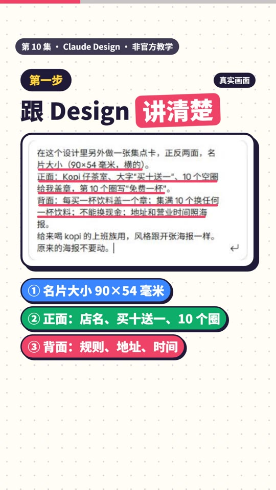
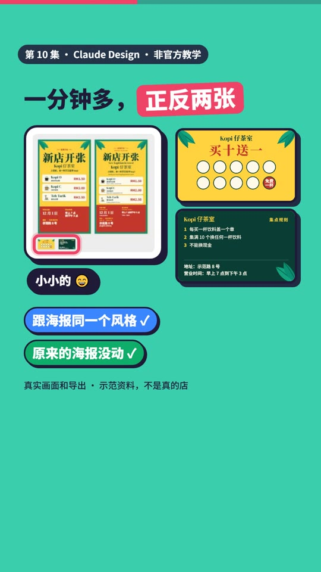
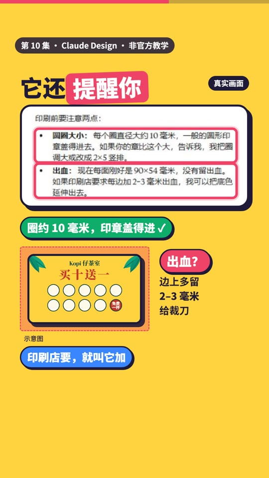
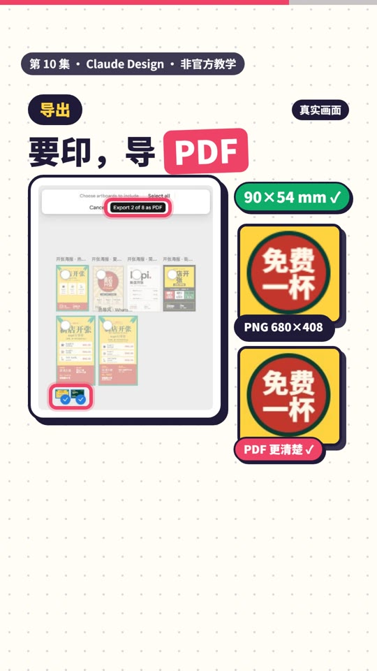
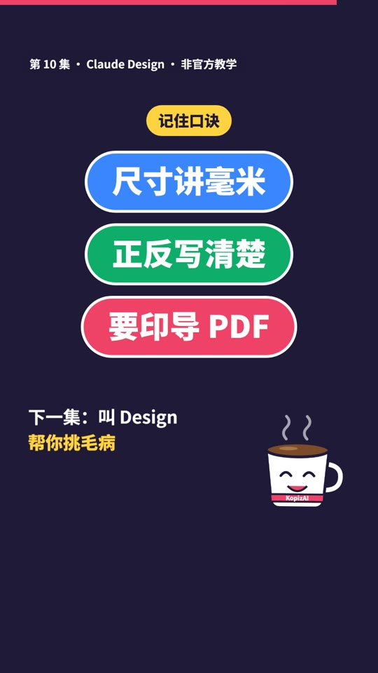

第 10 集 · 一句话做一张买十送一的集点卡
一句话： 跟 Design 讲清楚尺寸（用毫米）、正面写什么、背面写什么，它就做出正反两面的集点卡。要拿去印，导出 PDF。
对照官方文档和真实界面核对日期：2026-11-18 ｜ 时长 53 秒 ｜ 非官方教学
为什么要讲得这么清楚
官方说明里讲，好的提示词要讲清楚四样：做什么、怎么排、写什么、给谁用。集点卡是要印出来的东西，尺寸差一点就不对，所以尺寸直接讲毫米。
跟着做
第一步：一句话讲清楚尺寸、正面、背面（视频 00:04）
- 尺寸：名片大小，90×54 毫米，横的
- 正面：店名、大字"买十送一"、10 个空圈，第 10 个写"免费一杯"
- 背面：盖章规则、地址、营业时间
- 给谁用、什么风格：给来喝 kopi 的上班族，风格跟开张海报一样；原来的海报不要动
可以直接复制（换成你的店名和规则）：
在这个设计里另外做一张集点卡，正反两面，名片大小（90×54 毫米，横的）。
正面：＿＿（店名）、大字"买十送一"、10 个空圈给我盖章，第 10 个圈写"免费一杯"。
背面：每买一杯饮料盖一个章；集满 10 个换任何一杯饮料；不能换现金；地址和营业时间照海报。
给来喝 kopi 的上班族用，风格跟开张海报一样。原来的海报不要动。
（没有海报的话，把"照海报""跟开张海报一样"换成你的地址、营业时间和想要的颜色。）

结果：画布最下面多了正反两张（视频 00:16）
我们这次一分钟多就好了。两张卡在画布最下面，跟海报比起来小小的，颜色和叶子跟开张海报同一个风格；原来的海报都没动。正面是"买十送一"和两排各 5 个圈，第 10 个涂红写"免费一杯"；背面是 3 条规则、地址和营业时间。

它还提醒你两件印刷的事（视频 00:23）
- 圈的大小：每个圈直径大约 10 毫米，一般的圆形印章盖得进。你的章比较大，就叫它把圈调大。
- 出血：现在每面刚好 90×54 毫米，没有留出血。出血就是四边多留 2–3 毫米底色，裁的时候不会露白边。印刷店要的话，叫它把底色延伸出去。

画面里的"出血"框是示意图。
第二步：要拿去印，导出 PDF（视频 00:34）
Share → Export → PDF。PDF 默认全部都勾，要先把海报取消，只留集点卡那两张，按钮会写 "Export 2 of 8 as PDF"（数字看你画布上有几张）。我们导出来是 2 页，每页刚好 90×54 毫米。
为什么不用 PNG：PNG 选 2× 也只有 680×408，PDF 里是 1020×612，放大看 PDF 清楚很多。

口诀
尺寸讲毫米，正反写清楚，要印导 PDF。

时间点
| 时间 | 内容 |
|---|---|
| 00:00 | 买十送一集点卡，一句话就有 |
| 00:04 | 跟 Design 讲：尺寸、正面、背面 |
| 00:16 | 一分钟多，正反两张 |
| 00:23 | 它提醒：圈的大小、出血 |
| 00:34 | 要印，导出 PDF，只勾两张 |
| 00:41 | 口诀，下一集预告 |
顺便知道
- 视频开头的"KOPI"盖章是动画加的，Design 做出来的卡是空圈。
- 这次导出的 PDF 每页是一张高清图片，上面有一层看不见的文字（能搜索），字不是矢量的。名片大小印出来够清楚；要印很大的东西，先印一张看看。
- 店名、地址是示范资料，不是真的店。
- 在同一个设计里另外做一张、原来的不动，第 7、9 集也用过。
来源：Claude 帮助中心《Get started with Claude Design》，以及 2026 年 11 月 claude.ai 的实际操作 https://support.claude.com/en/articles/14604416-get-started-with-claude-design